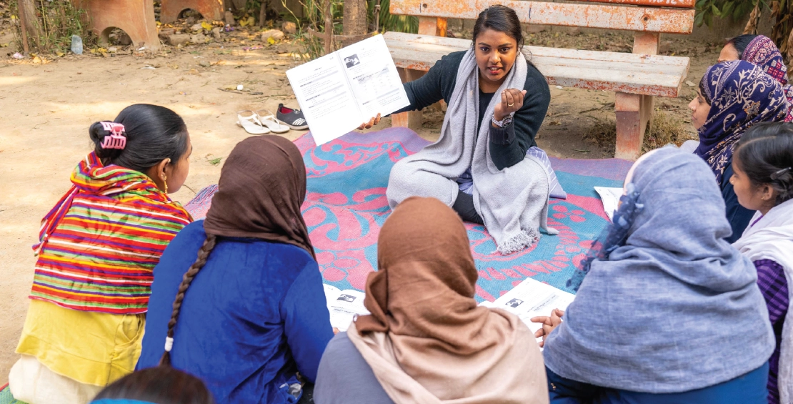

150,000+
Women
8
States
Over the past decades, gender equality has been recognized as crucial not only to the health of nations but also to their social and economic development. The promotion of gender equality and women empowerment is a key aspect of UNDP’s Sustainable Development Goals. A community, society, and country prosper when its women are empowered. Skilled women join India’s workforce and contribute to economy; healthy women lay down the foundation for healthy families; aware mothers ensure that their children go to school; empowered women become change makers and support other women.
Smile Foundation’s women empowerment programme Swabhiman, initiated in 2005, reaches out to marginalised and socially-excluded women with interventions in nutrition, healthcare and livelihood. The programme capacitates women through innovative community practices, empowering them to seek healthcare and bring sustainable changes in the community, while also supporting them to become aware, skilled and financially independent.
Swabhiman by far has been able to affirm through community actions and advocacy that though women face numerous socio-cultural challenges coming from their prescribed societal roles and ascribed status within the family, community, and society, contravening such challenges is very much possible through creation of opportunities and enabling environment. The mainstay of Swabhiman programme’s community outreach is through Change Agents, Peers Educators, Community Health Educators and Swabhiman Health Volunteers. These change agents are identified from the community and empowered through regular training sessions on relevant issues. They further educate and spread awareness among their peers in the community. Such interventions and innovations lead to a comprehensive approach that addresses social, economic, and health challenges, promoting sustainable development, and leaving a positive and lasting impact on individuals, communities, and society as a whole.
Reproductive & Child Health
Nutrition Enhancement
Entrepreneurship Development
Digital Financial Literacy
Govt Convergence & System Strengthening
Sustainability in Communities
Reproductive & Child Health is the pilot initiative of Swabhiman aimed at providing basic primary healthcare, addressing issues of pregnancy, newborn and child health, and facilitating access to public and private health facilities. Efforts are made to provide accessible and comprehensive reproductive health services, education, and resources to women of childbearing age. This includes promoting family planning methods, offering counseling on contraception, and ensuring access to contraceptives and family planning clinics. Through continuous communication activities in households and communities, the programme motivates, educates, and prepares expectant mothers for childbirth, highlighting an array of health issues including maternal and neonatal danger signs, nutrition, breastfeeding, and immunization. Besides promoting behavioural change, the programme envisages improvement in the health status of mothers, infants, and children by bringing curative healthcare services to their doorstep through health camps and telemedicine centres.
Studies have shown that the child’s health in their first 1,000 days of life is critical and as it influence the outcomes during childhood and later in adulthood. Hence, it becomes imperative to ensure healthy pregnancy and healthy mothers and children. Smile Foundation’s Nutrition Enhancement initiative is focused on strengthening the public healthcare infrastructure, and building awareness and knowledge amongst the community. Through the project, there has been an overall improvement in the health outcomes of mothers and children, and vulnerable populations have gained access and knowledge of obtaining low cost high nutrition food. Some of the key activities under the project include:
Entrepreneurship and skill development training is provided to women from urban slums and rural areas with limited means owning low scale businesses, giving them access to opportunities for economic empowerment, independence, and leadership. Industry experts join in-house Swabhiman trainers to help the women understand and apply the basics of business and financial management, marketing and communication. They are familiarized with ways and opportunities to scale up and expand their small-scale endeavors to maximize profit and grow as independent, successful entrepreneurs.
One of the major interventions under Swabhiman programme is working hand in hand with government institutions to enhance community awareness. The community institutions with which the networking is undertaken are Integrated Child Health Scheme (ICDS), health departments, educational institutions and panchayats. The fostering of network with such institutions has qualitatively impacted the outcome of efforts and activities, and Swabhiman has always kept these organizations under the information loop ensuring possibilities of future convergence and relationships.
Networking is also done with 3-level structures of the health administration for seamless implementation of its interventions:
More than 3500 women and adolescent girls, including daily wage workers, homemakers, small business owners, and expecting mothers, are being supported under Smile Foundation’s Swabhiman programme in Sarhaul and Dundahera villages, Gurugram. With an aim of making women self- reliant, Swabhiman is ensuring a fair and equal chance of having access to quality education, awareness on reproductive health and entrepreneurship development to beneficiaries in these locations.
The project is particularly focused on creating awareness on safe motherhood practices through various direct and indirect interventions such as follow-ups with ANC/PNC, peer learning group meetings with pregnant women and lactating mothers, health fairs, ANC sessions, and various street plays on nutrition, breastfeeding, immunization and vaccination. Additionally, the program educates women and helps them link to government initiatives like the Pradhan Mantri Mantra Vandan Yojana.
With these efforts, the Smile Foundation team has ensured 104 safe institutional deliveries, immunization of 460 infants, and vaccinations for 85 pregnant women during the reporting period in Sarhaul and Dundahera. Also, 15 pregnant women were enrolled in government programmes. In addition to this mega multi-specialty health camps are conducted periodically in the villages. The camps provide free healthcare services to women and children, including doctor consultations, counselling sessions, and various health check-ups like blood pressure, hemoglobin, eye tests, and sugar tests. Over time, local stakeholders from the community have taken ownership of the camps and join forces with physicians, lab technicians, dentists, pharmacists, and the Swabhiman team to ensure maximum benefits to the community.
The project has successfully made a difference in the lives of 60,000 women (especially pregnant and lactating mothers) and adolescent girls during the year.
This couple in Haryana is inspiring young men and women from their community. Pramila was the one who first joined Smile Foundation’s entrepreneurship programme for women - Swabhiman. Her husband Amul was skeptic about these sessions and thought Pramila was just wasting her time. But gradually he started to see that Pramila was gaining knowledge of many practical skills, and also becoming more aware and confident. Noticing Pramila’s diligence, the Swabhiman team helped her set-up a clothing boutique, financing the tailoring machines and other essentials for the shop. That was when Amul realised that the world of Swabhiman is able to create real change. This motivated him to get involved in the initiative. Today, he is volunteering as a community change agent with the programme and helping others realise the importance of women empowerment and financial independence. He conducts door to door visits regularly, counseling men and adolescent boys to help create a gender equal society.
During a door-to-door visit, Smile Foundation’s Swabhiman team met Lalita, a 25-year-old pregnant woman. Lalita is a migrant from Uttarakhand and lives with her husband and 2-year-old daughter. The Swabhiman team found out that Lalita had delivered her first child at home and she was not aware of any government schemes such as free vaccination and immunization, free checkup in local primary health centre and civil hospital. After regular counselling sessions with the Swabhiman team, Lalita and her husband agreed to enroll in the civil hospital for vaccinations and institutional delivery of their second child. Lalita safely delivered at the nearest civil hospital. However, her husband was reluctant to get immunization for the new born. The Swabhiman team further counselled her husband about the importance of and proper immunization, and even volunteered to accompany Lalita on the immunization visits so that her husband did not have to miss his work and lose his daily wages.
women impacted through Swabhiman programme
women and children provided nutrition enhancement support
girls and women provided awareness & access of healthcare
women and adolescent girls trained as change agents